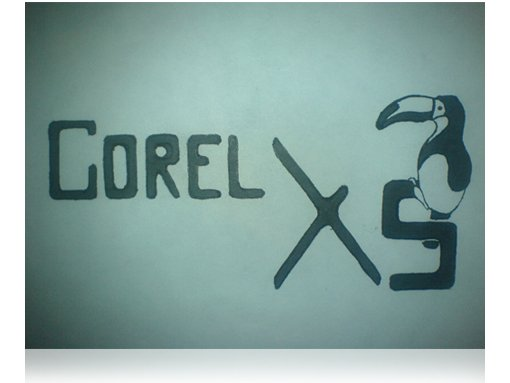

МОЙ corel Х5
ivan / 08.01.2009, 02:05/00:41
Форум:
Вот, как-то сижу на уроке и рисую...

ну... :P
Короче :D , вот че я потом трасировочкой вывел...
Ну и конечно, немного подправил... :)
Так вот сижу и думаю, может я выпустил новый корел!? :)
Ведь так, в основном, и выпускают разные X3, X4. Только цыфру меняют ("переносное" мнение)...
Жду ответов... :D
По поводу рисунка -- не АЙС.
Плохой шрифт, ужасный кернинг
Повтор птички не к месту, это тоже самое что написать corel 2-а раза в логотипе
А по поводу "только цифру меняют" -- если вы действительно такого мнения, то как пользователь программы вы 0 и придерживаясь этого мнения далеко не уедите.
Я же написал...
Ну да, мне только 15, но зато есть желание...
ivan, а мне понравился законченный вариант)))
Вот понятно чем теперь дети на уроках занимаются, еще 14 не успели разогнать по полной, а ты уже о 15 думаешь. Думаю твой вариант они рассмотрят. А почему Тукан?
Кстати как то символично получается 15 лет и 15 версия уже, Гляди и не спроста это все.
Очень даже интересный вариант, с ним стоит обратиться в компанию Corel.
Единственно, птицу из первой буквы надо убрать.
Всем кто ищет CorelDRAW X5
Не ищите )))) просто потому что искать нечего. Он разрабатывается. Публичные бета-версии врятли будут. Если кому сильно хочется посмотреть и попробовать, смотреть здесь.
Когда будет финальный релиз?
Это тоже неизвестно. Предположительно в 2010 году.
П.С. Как только можно будет сделать обзор что нового в X5, я обязательно сделаю это на этом сайте. Заходите в гости почаще ;)
Для самых нетерпеливых есть бета версия Corel Draw X5 третьей сборки.
Вот и пришло время опубликовать обзор Что нового в CorelDRAW X5